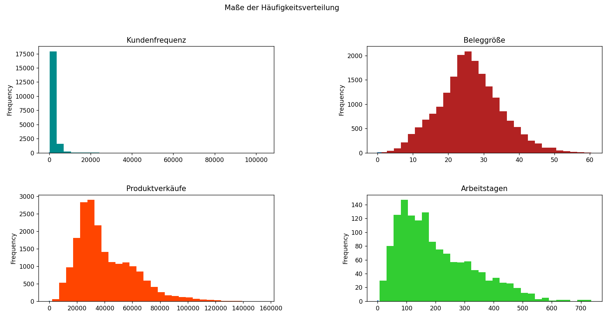
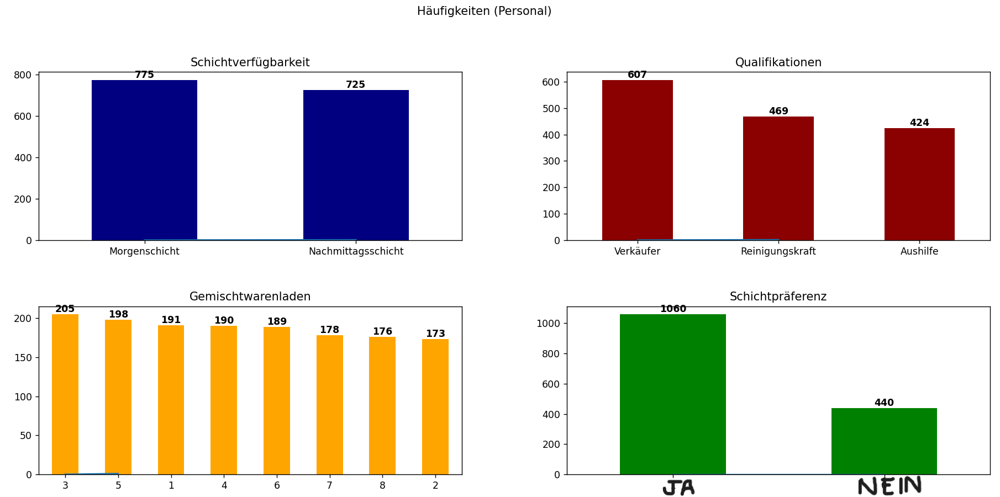
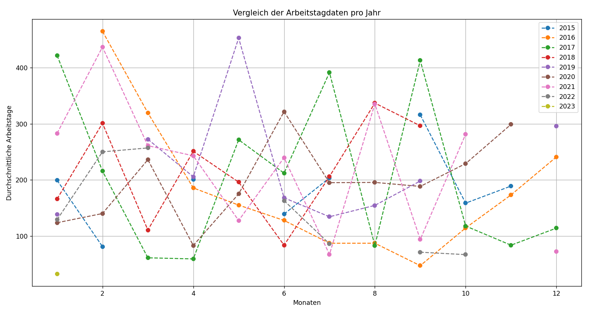
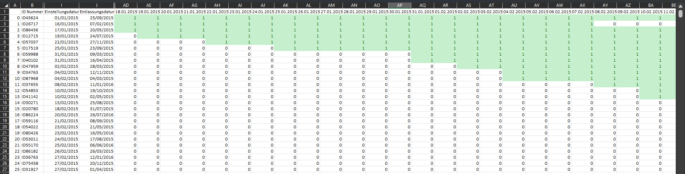
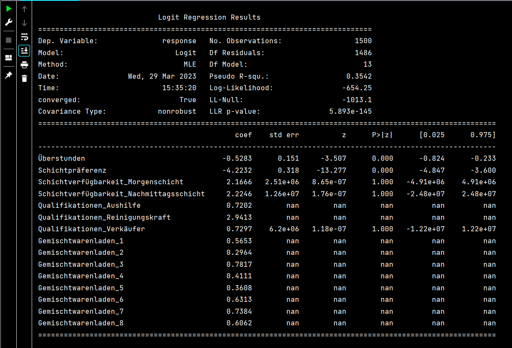

Workforce management in Retail:
Application of workforce planning and retention analysis of staff in several convenience stores within a city. How statistical analysis and data visualization techniques can help predict employee retention and identify factors that contribute to employee turnover.
A recent phenomenon known as the "Big Quit" in the retail industry has prompted companies to seek more
effective solutions for both business operations and employee satisfaction. Traditionally, managers have
relied on intuition and experience to allocate resources—an approach that is often unreliable and not
always optimal.
As a result, retail companies are increasingly turning to data-driven strategies to optimize workforce
management. By analyzing employee scheduling, availability, and performance data, they aim to reduce labor
costs, improve employee retention, and enhance customer service.
Workforce management (WFM) initiatives focus on aligning staffing with business needs and customer
demand while minimizing labor costs. These projects typically involve the use of scheduling models and
retention analysis to support operational decisions.
Thanks to digitization in the retail sector, complex tasks such as employee scheduling and retention
forecasting can now be optimized using data analysis and machine learning algorithms.
The CRISP-DM methodology provides a robust framework that data scientists use to guide their
projects from understanding the business context and technical constraints to tackling complex data
problems and evaluating outcomes. By gaining a clear understanding of the retail industry's needs during
the first phase of CRISP-DM, key factors can be identified and translated into actionable insights for
developing practical data solutions.
Through data analytics, patterns in workforce-related data commonly found in retail settings can be
uncovered. Meanwhile, machine learning enables adaptive modeling, allowing managers to adjust schedules in
real time. This responsiveness ensures that employees are deployed where they are needed most, reducing
idle time, boosting efficiency, and positively impacting employee retention.
This project addresses two core objectives: Employee planning and Retention analysis. It uses
simulated data that reflects characteristics typically found in retail environments. (Note: All data used
in this project is simulated and not representative of real-world data.)
STEP 1: Business Understanding
I. Employee scheduling:
Data-driven scheduling ensures sufficient staffing to meet operational
demands under varying workloads, while also accounting for employee preferences and availability. This
approach maximizes business productivity by ensuring that the right employee is available at the right
time.
II. Retention analysis:
Employee retention is a critical challenge in the retail industry.
Analyzing retention helps identify the key factors contributing to employee turnover and supports the
development of targeted strategies to reduce attrition and improve staff retention over time.
Key Performance Indicators (KPI) in this project include turnover and retention rates, as well as
estimated costs associated with overstaffing and understaffing. As high turnover in retail not only
increases hiring and training costs but also disrupts store operations and reduces service quality. Which
means that effective retention strategies can directly impact profitability.
By optimizing scheduling, this project has to explore whether there is any alignment between shift
preference has an impact on turnover, and whether certain roles or stores experience different levels of
staffing needs.
STEP 2: Data Understanding
This project is based on data collected from eight convenience stores over the years 2015 to 2023. Before
implementing data-driven scheduling solutions, it is essential to ensure that the data used is relevant to
the specific business problem.
The data understanding phase focuses on identifying and covering all activities related to the problem.
This serves as a foundation for constructing the final dataset from the available raw data. The key tasks
in this step include data collection, initial examination, and assessment of data quality.
The project relies on the following two categories of data, sourced from eight convenience stores. These
two elements form the basis for both scheduling optimization and retention analysis:
NOTE: In this project, I will not consider typical data quality issues such as anomalies or missing
values, as all data has been specifically generated for simulating purposes.

1. Staff information: These attributes vary by employee and include the following data points:
+ ID number
+ Shift availability
+ Qualifications
+ Overtime (Availability)
+ Shift
preference
+ Starting date
+ Departure date
+ Convenience Store Number
NOTE: Staff information is essential for analyzing retention and for managing employee
preference and availability in scheduling. This information will help create weekly shift plans that
help in meeting store demand while respecting individual employee preferences.
2. Store elements: These are dynamic features representing various activities within each store.
+ Date
+ Convenience Store Number
+ Public holiday
+ Major special promotions
+
Customer frequency
+ Receipt size
+ Product sales
NOTE: Store elements are critical for understanding the operational differences among the
eight convenience stores and how factors like store demand may affect staffing levels and retention rates.
It is important to consider that all store operate 6 days a week with two shifts per day.
Finally I would like to say that although the data is synthetic, it is designed to reflect realistic
patterns observed in workforce management projects, including turnover trends and store-specific demand
variability.

STEP 3: Data Preparation
Data preparation essentially involves the process of adjusting the information extracted from the previous
step, and transforming that data for easier manipulation and a more concise arrangement of information to
identify aspects of the information such as variable names, data types, missing values, and even data
distributions.
Data types play a crucial role in data preparation and data exploration as they are used as a means
of performing specific operations depending on the specified format. In the case for the staff dataframe,
we are handling a number of variables that are initially read in an incorrect datatype, which misrepresents
the variable and doesn't enable to perform essential tasks for data transformation. For that cause, we
cast the data columns to their better representative datatypes.
Transformed datatypes:
+ Überstunden (JA/NEIN) --> (True/False)
+ Schichtpräferenz (JA/NEIN) --> (True/False)
+ Einstellungsdatum (object) --> (datetime64[ns])
+ Entlassungsdatum (object) --> (datetime64[ns])
+ Gemischtwarenladen (int64) --> (object)
import numpy as np
import pandas as pd
staff_df = pd.read_csv("/.../databases/staff_elements.csv", encoding='latin1', header=0)
staff_df = staff_df.replace('k.A', np.nan)
staff_df[['Überstunden', 'Schichtpräferenz']] = staff_df[['Überstunden', 'Schichtpräferenz']].replace({'JA': 1, 'NEIN': 0}).astype('bool')
staff_df['Einstellungsdatum'] = pd.to_datetime(staff_df['Einstellungsdatum'], format='%d/%m/%Y')
staff_df['Entlassungsdatum'] = pd.to_datetime(staff_df['Entlassungsdatum'], format='%d/%m/%Y')
staff_df['Tage_zwischen'] = (staff_df['Entlassungsdatum'] - staff_df['Einstellungsdatum']).dt.days
staff_df['Gemischtwarenladen'] = staff_df['Gemischtwarenladen'].astype(str)
Personal data types:
ID Nummer object
Vorname object
Nachname object
Schichtverfügbarkeit object
Qualifikationen object
Überstunden object --> bool
Schichtpräferenz object --> bool
Einstellungsdatum object --> datetime64[ns]
Entlassungsdatum object --> datetime64[ns]
Gemischtwarenladen int64 --> object
Tage_zwischen float64
dtype: object
Before moving to the next step, let's consider the following aspects of the data that will influence the
structuring of data exploration.
--> 8 different convenience stores
--> 87 months of historical data
--> 3 types of jobs positions
--> 2 types of work shifts
--> 1500 staff IDs with issue and dismissal dates
STEP 4: Data Exploration and Visualization
The first step in data analysis begins after data preparation, once the dataset is clean and structured.
The main goals of data exploration is to: 1. Understand what is contained in a dataset, 2. Identify its
properties, 3. Find possible relationships between data elements and 5. Discover anomalies or patterns. All
by virtue of the generation of "metadata".
This is achieved through the generation and evaluation of metadata, which is a form of structured
information that describes data. Metada includes Descriptive, structural, reference and statistical
elements, which serves to create a mental model of the dataset through the understanding of the nature
of its information.
For the most part, descriptive analytics helps determine the characteristics of a data set
through 3 different measures:
1. Central tendency (mean, median, mode)
2. Variability (standard deviation, range, interquartile range)
3. Frequency of distribution
+ Skewness: which measures the degree of asymmetry in a distribution. (Closer to zero means perfect symmetric distribution.
+ Kurtosis: which measures the resemblance to a normal distribution. (Closer to 0 means follows a normal distribution.
+ Jarque-Bara test: is a hypothesis test that handles both skewness and kurtosis in order to test the hypothesis that the data are from a normal distribution.
Deskriptive Analyse Vergleich der Beleggröße mit und ohne Ausreißer:
count 23856.00 ---- 19808.00
mean 21.71 ---- 26.15
std 12.64 ---- 8.73
min 0.00 ---- 0.64
25% 14.53 ---- 20.6
50% 23.95 ---- 25.88
75% 30.15 ---- 31.55
max 60.44 ---- 60.44
skew -0.35 ---- 0.20
kurt -0.54 ---- 0.12
jarque-bera (p-value) 0.0000 ---- 0.0000
Name: Beleggröße, dtype: float64
Ergebnisse belegen, dass die Verteilung der Beleggröße einer Normalverteilung folgt.
TESTS FOR NORMATIVE DATA
A normal distribution is a continuous probability distribution that is symmetric about its mean, where most
observations gather around the central peak, and the likelihood of values decreases symmetrically as they
move away from the mean. This behavior enables meaningful probability estimates and comparison between data
points.
Descriptive analytics often aim to assess whether data approximates a normal (Gaussian)
distribution. Doing so allows standardization techniques to be applied, making it possible to compare
observations and compute probabilities across different populations. As without normality, a great majority
of statistical tests and models suddenly becomes invalid.
Most statistical hypothesis tests assume that the data follows a bell, which isn't the case in most
analyzed databases. Which is why transformation techniques, such as logarithmic, square root or Box-Cox
transformations, are crucial for aligning data into adopting normative distributions.
NOTE: When working with Linear Models, such as: LDA, Gaussian Naive Bayes, Logistic
Regression, Linear Regression, etc., you should first measure the data distribution and ensure that all
data handled within the model follows something close to a normal distribution, as all of them are
explicitly calculated from the assumption that the distribution is a bivariate or multivariate normal.
When conducting exploratory data analysis (better known as EDA), it's essential to consider the
data types present in the dataset. Variables may be numerical (continuous/discrete) or categorical
(ordinal/nominal), and this distinction affects how each feature is analyzed.
A great example is how continuous variables are best summarized through statistical distributions, while
categorical variables require frequency counts and contingency tables. This helps ensure the correct
selection of visual and statistical methods later in the modeling phase (which I will demonstrate in the
following sections).

DATA VISUALIZATION
Thanks to data visualization, many statistical assumptions can be quickly validated based on how the data
shows itself through a different number of plots and graphs. Visualization methods like histograms,
boxplots, and scatter plots help in understanding the shape, spread, and patterns in the data.
For example, earlier bar charts reveal the varying distributions of store sales, customer frequency,
receipt sizes, and employee retention duration. These visual cues guide a better understanding of
performance metrics and help flag anomalies early on.

In categorical data analysis, it is important to check for class imbalance. When one class is over- or
underrepresented, predictive models often become biased, reducing accuracy and interpretability. In the
case, the employee dataset shows relatively balanced sample sizes across most categorical features, which
is important for fair comparisons and robust model training.
For the case of staff data, we can identify the sample sizes for the main categorical data that
will influence retention, in this case the sample sizes for almost all categorical data is closely equal.
That is important since equal sample sizes help to ensure that any observed differences between categories
are not simply due to chance, making it easier to determine whether any observed differences are
statistically significant instead of simply due to the randomness of the sampling process.
Another key tool during data exploration is correlation analysis, such as Pearson’s correlation, which
quantifies the strength and direction of linear relationships between pairs of variables. Understanding
correlations is essential in predictive modeling to prevent multicollinearity and to identify the most
influential predictors.
For the case of retention analysis, one of the most crucial variables is the duration of employment,
measured as the time between hiring and dismissal dates. Understanding which variables correlate with
longer or shorter employment spans provides actionable insights into workforce dynamics and could even help
managers understand what factors impact retention the most during the past 87 months of data.
According to the Pearson Correlation Matrix, the most relevant variables to retention are:
Schichtpräferenz 55.5059%
(Qualifikationen) Reinigungskraft -41.5935%
(Qualifikationen) Verkäufer 21.7596%
It's also valuable to assess multicollinearity between independent variables. High correlations between
predictors can inflate variance in model estimates and obscure the individual impact of each variable.
In the case of strong multicollinearity, it's important to filter redundant features prior to model
development.
For the RETENTION ANALYSIS PROBLEM we'll have to develop and train a predictive model that
considers the factors that contribute to employee turnover. Before predictive modeling can be done, it is
also necessary to test for seasonality—that is, recurring patterns based on specific time intervals.
Seasonality can significantly impact staffing needs in some domains.
Seasonality tests looks for periodic fluctuations within historical data or cycles that occur regularly
based on a particular season. A season could be associated to a calendar season (summer or winter), or it may
refer to a holiday season.

By comparing two types of historical data—store sales and employment durations—we observe that sales show
clear seasonal peaks over the 87-month period. However, employment durations do not exhibit such
periodicity. This suggests that, for the staff retention problem, seasonality tests are not applicable
since hiring and turnover patterns do not follow seasonal trends.

STEP 5: Feature Engineering
In order to proceed with the next step, we must prepare the data by transforming it for further analysis.
This may involve tasks such as normalizing or standardizing variables, creating new variables based on
existing ones, or reducing the dimensionality of the data. By doing so, we can improve considerably the
performance of the models.
Another essential aspect of feature engineering is the transformation of categorical variables into
numerical representations. This is commonly done through the creation of dummy variables, which allows us
to capture the influence of each category on the response variable by comparing their respective
coefficients in a regression model.
For the retention analysis regression model, we will use employee-level data with dummy variables
generated from categorical columns such as: Qualifications, Shift Preference, Shift Availability, and
Overtime Availability. These transformed variables will allow to quantify how different attributes
influence the duration of employment or the likelihood of turnover.
To convert the employment period of an employee into a range of dates usable by the scheduling model, we must extract a full availability timeline. Each employee's availability should be represented as a daily sequence between their start and end dates, so that the scheduling algorithm knows exactly when each employee can be assigned to shifts.
# Python CODE: FEATURE ENGINEERING
These lines of code generate hundreds of columns of binary values between the dates of 2015 and 2023 as a way of representing the availability of employees during the periods.
staff_model['date_range'] = staff_model.apply(lambda row: pd.date_range(start=row['Einstellungsdatum'], end=row['Entlassungsdatum'], freq='D'), axis=1)
datumsbereich = pd.date_range(start="01/01/2015", end="31/03/2023", freq='D')
for date in datumsbereich:
staff_model[date.strftime('%d.%m.%Y')] = staff_model['date_range'].apply(lambda x: 1 if date in x else 0)
staff_model.drop('date_range', axis=1, inplace=True)
These following lines of code drops all dates that represent holidays and sundays where the stores are supposed to be closed and don't require staff.
date_filter = store_retention[store_retention.Datum.dt.weekday == 6]
date_filter = date_filter[date_filter["Feiertag"] != 1]
date_list = list(date_filter["Datum"])
date_list_str = [date.strftime('%Y-%m-%d %H:%M:%S') for date in date_list]
date_list = [datetime.datetime.strptime(date, '%Y-%m-%d %H:%M:%S').strftime('%d.%m.%Y') for date in date_list_str]
Time-based features are crucial in both the retention and scheduling models. These can help detect patterns
such as employees being more likely to leave after a specific duration or certain shifts being understaffed
on specific weekdays.
Identifying other kinds of interactions between categorical and numerical variables can add predictive
power to the retention model. For example, combining shift preference with overtime hours worked might
reveal important dynamics about employee stress or burnout, which directly influence turnover rates. These
interactions can be engineered manually or detected via tree-based models during model training.

STEP 6: Model Building and Training
Finally the main objective for the project revolves around model building and training. Within this project
we will develop two different types of model types: Optimization model for Employee Scheduling and
Logistic Regression Model for Retention Analysis.
For the Employee scheduling problem, the PuLP library, a Python-based linear programming toolkit
focused on define decision variables, constraints, and an objective function for an optimization model. The
optimization model from PuLP provides a good enough flexibility needed to solve complex workforce
allocation problems under Linear programming.
Linear programming is specially suited for optimizing Employee Scheduling, as it enables quantitative
decision-making while ensuring that key operational and personnel constraints are respected, specifically
by using Binary Integer Linear Programming, where decision variables take values of 0 or 1 to indicate
assignment or non-assignment.
Linear programming is a mathematical modeling technique that considers a set of input constraints within
quantitative decision making in employee scheduling. In the case for this employee scheduling problem we
consider the following constraints:
1. Shift preferences
2. Role in the convenience store
3.
Maximum number of consecutive days that the employee is working
Translating the decision variables that we've been obtaining through the steps of "Data Understanding",
"Data Preparation", "Data Exploration" and "Feature Engineering" leaves the following labels:
xe,s,d ∈ {0, 1} be a binary decision variable
e ∈ E: set of employees
s ∈ S: set of shift types (e.g., “Morgenschicht”, “Nachmittagsschicht”)
d ∈ D: set of dates
The objective function of the employee scheduling model is designed to maximize overall preference
satisfaction across the workforce. Each employee has a declared or inferred shift preference—typically
between “Morgenschicht” and “Nachmittagsschicht”. These preferences are encoded as binary scores, where a
value of 1 indicates that an employee is either available or willing to work that shift, and 0 otherwise.
opt_prob = plp.LpProblem("Employee Scheduling", plp.LpMinimize)
personal = staff_df['ID Nummer'].tolist()
schichtverfugbarkeit = staff_df['Schichtverfügbarkeit'].unique().tolist()
qualifikationen = staff_df['Qualifikationen'].unique().tolist()
datum = datumsbereich.strftime('%d.%m.%Y').tolist()
datum = [x for x in datum if x not in date_list]
x = plp.LpVariable.dicts("x", [(a, b, c) for a in personal for b in schichtverfugbarkeit for c in datum], cat='Binary')
opt_prob += plp.lpSum([x[(a, b, c)] for a in personal for b in schichtverfugbarkeit for c in datum])
for c in datum:
for b in schichtverfugbarkeit:
opt_prob += plp.lpSum([x[(a, b, c)] for a in personal]) >= staff_df[staff_df[ 'Schichtverfügbarkeit'] == b][d].sum()
for d in qualifikationen:
opt_prob += plp.lpSum([x[(a, c, c)] for a in personal if staff_df.loc[staff_df ['ID Nummer'] == a, 'Qualifikationen'].item() == d]) >= \ staff_df[(staff_df['Schichtverfügbarkeit'] == b) & (staff_df[c] == 1) & (staff_df['Qualifikationen'] == d)][c].sum()
for a in personal:
for i in range(len(datum) - 4):
opt_prob += plp.lpSum([x[(a, b, datum[j])] for j in range(i, i + 5) for b in schichtverfugbarkeit]) <= 5
opt_prob.solve()
The model then sums the number of assignments that align with these preferences across all employees,
shifts, and days. This results in an optimization function that not only fills necessary positions but also
attempts to honor employee preferences as much as possible, which can contribute to higher satisfaction and
potentially better retention.
The optimization model maximizes overall shift preference satisfaction, giving priority to employees
working in their preferred shifts. It's represented as mathematical in the following way:
Maximize Z = ∑(e ∈ E) ∑(s ∈ S) ∑(d ∈ D) pe,s × xe,s,d
Wenn pe,s ∈ {0,1}: preference score = 1 wenn Mitarbeiter e eine
Präferenz für den Schicht hat oder nichts, Anderfalls 0.
One Shift per Day Constraint
∑(s ∈ S) xe,s,d ≤ 1 ∀ e ∈ E, ∀ d ∈ D
Max 5 Consecutive Working Days Constraint
∑(i=0 to 5) ∑(s ∈ S) xe,s,di ≤ 5 for any 6-day window
Qualified Staff Requirement Constraint
∑(e ∈ Eq) xe,s,d ≥ 1 if Eq exists for shift s on day d
Domain Constraints
xe,s,d ∈ {0, 1}
The mathematical model takes into account the following constraints:
-> Constraint 1: One Shift per Day
To ensure fairness and practicality, the first constraint guarantees that no employee is assigned to more
than one shift per day. This prevents overwork and scheduling conflicts. For each employee and each day,
the model checks all potential shifts and ensures that the sum of assignment variables does not exceed one.
-> Constraint 2: Maximum 5 Consecutive Working Days
The second constraint addresses employee well-being by limiting the number of consecutive days an employee
can be assigned to work. This prevents the existence of a six day workweek.
-> Constraint 3: Qualified Employee Requirement
This constraint ensures that each shift on each day is staffed by at least one employee with the necessary
qualifications. For instance, certain shifts may require a “Reinigungskraft” , “Aushilfe”, or “Verkäufer”.
The model verifies for every shift-day combination whether at least one staff member with the required
qualification is available and assigns them accordingly.
NOTE: If no qualified employee is available, the
constraint is automatically skipped to prevent infeasibility. This selective enforcement guarantees
operational continuity without sacrificing solvability of the model.
Now that the Employee scheduling model is running without any issue, it's time to start with the logistic
regression model built for the Retention analysis problem. The goal of this model is to uncover
patterns in employee characteristics that correlate with shorter or longer tenure, helping management make
informed decisions about hiring, training, and scheduling policies. Logistic regression is particularly
well-suited for this task because it can estimate the probability that an employee will fall into a binary
outcome—retained long-term or not—based on a combination of input variables.
The logistic regression model will estimate the probability of an employee leaving the organization based
on the values of the independent variables. The model will also provide information on the strength and
direction of the relationship between each independent variable and employee retention.
The logistic regression model is built around a binary response variable named response, which reflects
whether an employee stayed in the company for less than the average tenure across all employees. If the
total number of days between hiring and termination (Tage_zwischen) is below the dataset’s mean, the
response is set to 1; otherwise, it is set to 0. This binary encoding enables the model to classify
employees into two groups and allows the logistic regression algorithm to calculate odds ratios for each
predictor variable, which represent the likelihood of shorter tenure.
import statsmodels.api as sm
import pandas as pd
dumm_eins = pd.get_dummies(staff_df["Schichtverfügbarkeit"], prefix="Schichtverfügbarkeit")
dumm_zwei = pd.get_dummies(staff_df["Qualifikationen"], prefix="Qualifikationen")
dumm_drei = pd.get_dummies(staff_df["Gemischtwarenladen"], prefix="Gemischtwarenladen")
df_logit = pd.concat([staff_df, dumm_eins, dumm_zwei, dumm_drei], axis=1)
predictors = ["Überstunden", "Schichtpräferenz", "Schichtverfügbarkeit_Morgenschicht", "Schichtverfügbarkeit_Nachmittagsschicht", "Qualifikationen_Aushilfe", "Qualifikationen_Reinigungskraft", "Qualifikationen_Verkäufer", "Gemischtwarenladen_1", "Gemischtwarenladen_2", "Gemischtwarenladen_3", "Gemischtwarenladen_4", "Gemischtwarenladen_5", "Gemischtwarenladen_6", "Gemischtwarenladen_7", "Gemischtwarenladen_8"]
mean_resp = df_logit["Tage_zwischen"].mean()
df_logit["response"] = (df_logit["Tage_zwischen"] < mean_resp).astype(int)
response = ["response"]
X_train, X_test, y_train, y_test = train_test_split(df_logit[predictors], df_logit[response], train_size=0.8, random_state=0)
model = sm.Logit(y_train, X_train).fit()
y_pred = model.predict(X_test)
y_pred = np.round(y_pred)
accuracy = accuracy_score(y_test, y_pred)
precision = precision_score(y_test, y_pred)
recall = recall_score(y_test, y_pred)
f1 = f1_score(y_test, y_pred)
Predictor Variable: Überstunden
One of the most influential features is Überstunden, which indicates whether the employee is willing to
work overtime. Including this variable helps reveal its actual role in turnover behavior.
Predictor Variable: Schichtpräferenz
This binary variable reflects whether an employee is flexible in working multiple shift types. This
variable is critical for evaluating whether scheduling compatibility influences retention.
Predictor Variables: Schichtverfügbarkeit, Qualifikationen, and Gemischtwarenladen
Additional predictors include one-hot encoded representations of each employee’s shift availability
, qualification type, and store location. These features capture fixed personal attributes and contextual
factors that might impact retention differently. For example, employees at busier stores or those with a
certain type of role might be more prone to leave early.
The statistical modeling is performed using the statsmodels Python library, which provides a robust and
transparent interface for fitting Generalized Linear Models, including logistic regression. The Logit()
function from statsmodels.api is used to construct the model, and .fit() is called to estimate coefficients
using maximum likelihood estimation. Statsmodels produces a detailed summary that includes p-values,
confidence intervals, odds ratios, standard errors, and Wald test statistics.
This output is invaluable for understanding which variables significantly influence employee retention and
the strength of these effects, beyond a simple correlation test. The results also support managerial
decision-making by translating model coefficients into human-readable insights. For performance validation,
additional evaluation metrics like accuracy, precision, recall, and F1-score are computed using sklearn,
ensuring the model performs well not only statistically but also in terms of prediction reliability.
Logit() defines the logistic regression model
.fit() estimates coefficients via Maximum Likelihood
.summary() provides a full statistical report, including:
STEP 7: Model Evaluation and Comparison
Thanks to the preparation and transformation of data during the past steps we can, through the process of
Model evaluation, we were able to obtain the following performance metrics for each model:
OPTIMIZATION MODEL:
With the results obtained from the optimization model (Status: Optimal) we can see that the
adjustment of schedules within the available resources is possible if there is a minimum of demand for
personnel (1 for each role).
The Optimization Model is designed to handle 502,843 unique constraints
(including shift duration constraints), have up to 970,280 decision variables (integer choices) where each
variable represents whether an employee is assigned to a specific shift on a particular date and up to
6,658,926 elements.
In this case, the employee scheduling model is able to manage which employees would be available for each
day and shift in every store while at the same time ensuring that the constraints are met.
These results prove that the number of employees available during each period of time is enough to support
the operation of all the stores within the city for a total of 87 months (excluding holidays and sundays).
LOGISTIC REGRESSION MODEL:
Like we mentioned previously, the logistic regression model allows to identify which variables most
significantly impact employee retention. Rather than simply classifying whether an employee will leave
within a given period, the model estimates the probability of attrition based on multiple characteristics.
Using the results of the logistic regression model, we can identify which variables have the greatest
impact on retention, since we are not simply predicting whether an employee will leave the store within a
given time period, but rather estimate the likelihood that he/she will leave the store will leave the
company.
The output of a logistic regression model includes a summary of the model's coefficients and other
statistics that can be used to assess the model's performance and interpret its results. Two of the key
metrics are the regression coefficients (coef) and the associated p-values (P>|z|).

A positive coefficient indicates that an increase in the corresponding predictor variable increases the
log-odds of early employee departure, whereas a negative coefficient suggests a decrease in that
likelihood. In the model, variables such as "Schichtpräferenz" and "Überstunden" show a strong negative
correlation with employee turnover, meaning they reduce the likelihood of early departure.
Likewise, a positive coefficient for "Qualifikationen_Reinigungskraft" implies that employees with cleaning
roles are more likely to leave early. The p-value associated with each coefficient measures statistical
significance. Smaller p-values suggest that the variable has a meaningful impact on the response variable.
In the case, some variables—like "Schichtverfügbarkeit"—do not show statistical significance, indicating
they may have limited influence on retention outcomes.
Welcome to the CBC MILP Solver
Version: 2.10.3
Build Date: Dec 15 2019
Result - Optimal solution found
End time: 996.1563172340393
Status: Optimal
Total Cost = 33263.0
# Python Output for Regression model:
Optimization terminated successfully.
Current function value: 0.425496
Iterations 11
Accuracy: 0.79
Precision: 0.8841463414634146
Recall: 0.7671957671957672
F1 Score: 0.8215297450424929